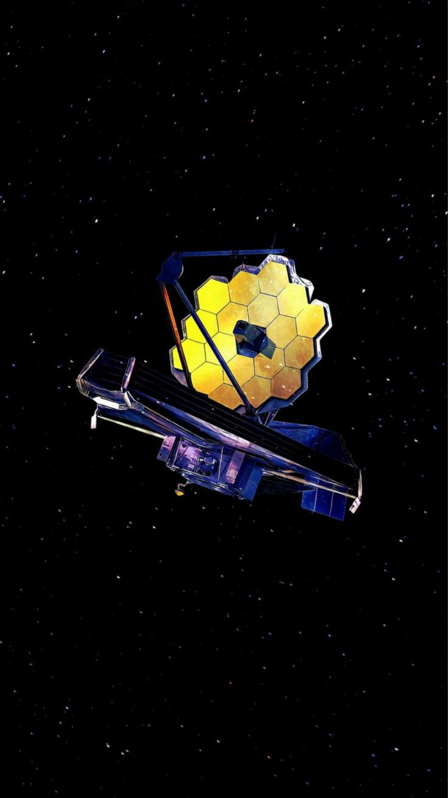
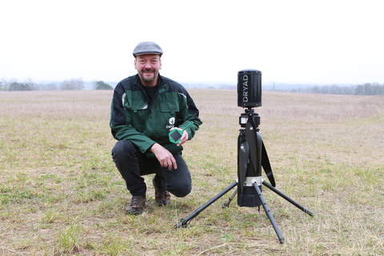
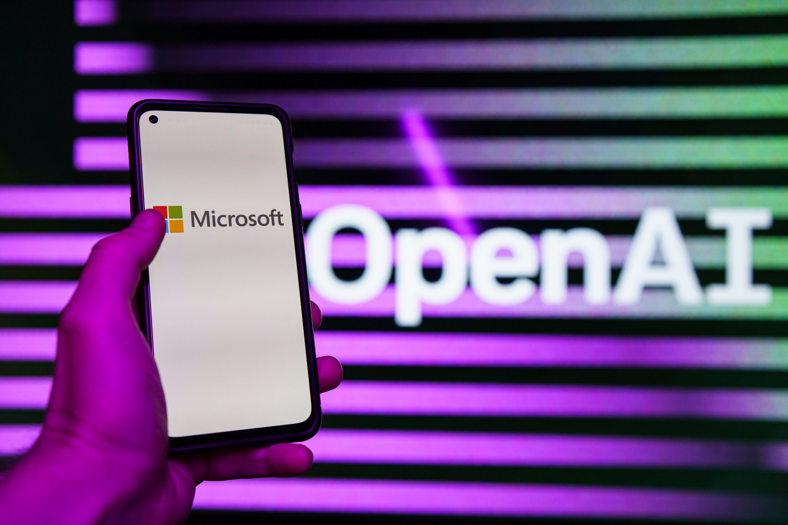

With its advanced text-to-speech (TTS) and speech-to-speech (STS)
capabilities, Nova-3 captures specialized medical terms, acronyms,
and clinical jargon—even when speakers are away from the microphone.
This AI model integrates medical transcriptions with clinical workflows.

James Webb Space Telescope
Launched on December 25, 2021, the JWST studies the early Universe
and the formation of solar systems. Unlike Hubble, it orbits the Sun,
1.5 million kilometers away from Earth.

Silvaguard: AI Drone for Wildfire Detection
In response to the intensifying threat of wildfires, Dryad Networks
introduces Silvaguard—a drone that detects and monitors fires at their
earliest stage. Integrated with an advanced sensor network, it provides
real-time infrared and optical video for precise situational awareness.
Researchers at Nagoya University reveal a nanoscale shooting game, using
electron beams to manipulate particles. This Nano-Mixed Reality (Nano-MR)
system blurs the digital-physical divide, hinting at applications in
biomedical engineering and nanotechnology.

How Microsoft’s In-House AI Might Rival OpenAI
Microsoft is developing proprietary AI models to reduce reliance on
external partners. These models will integrate into Azure and their
virtual assistant, Copilot, delivering solutions tailored to their ecosystem.
MWC25: Fujitsu Unveils Its 5G Strategy for Telcos
At Mobile World Congress 2025, Fujitsu showcased AI-driven tools to enhance
5G network operations. Their Virtuora IA suite automates troubleshooting
and optimizes performance for telecom operators.